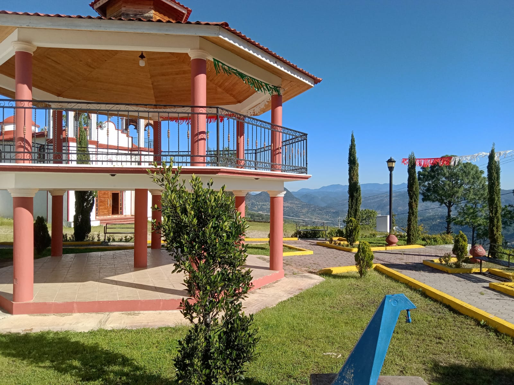
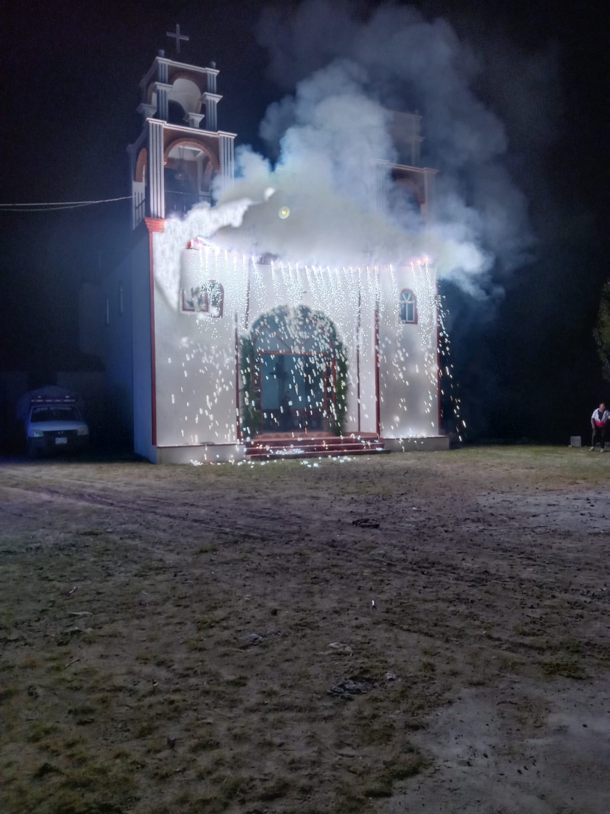
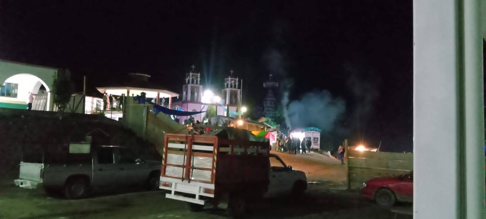

|
| |
El nombre "Juan Escutia" está asociado a uno de los Niños Héroes de Chapultepec.  Elaboracion de molcajetes en la comunidad de Juan escutia
La fiesta patronal de San Juan Escutia en Tlaxiaco, Oaxaca, se celebra el 24 de junio, que es el día del nacimiento de San Juan Bautista. La celebración suele implicar misa, procesiones, juegos y bailes.   |